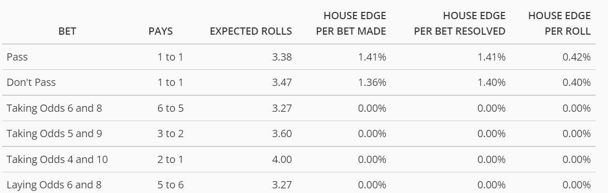

Take Home Midterm – Building a Game of Craps
Contents
Take Home Midterm – Building a Game of Craps#
Due Nov. 15, 2022 - 2:00 pm
Overview#
This class is about developing new skills – not memorization. The only way to develop new skills is to provide challenges that push your boundaries. I expect this midterm will achieve this objective. Since the exam is non-traditional, the grading will be as well. Your assignment is to build part of a playable texted-based game of craps.
Rules of Engagement#
I would like you to work collaboratively to solve this problem. I imagine most of you would struggle with this assignment independently, while collectively, it should be doable. I, however, want to make sure your work is original. To ensure this, I am requesting the following:
You are allowed to work and discuss with your classmates, but do not share code. You can look at each other’s code, but you should write it yourself.
Your code should be documented with extreme detail. Please explain why every line of code is necessary and what it does. The documentation of your code will be more critical in determining your grade than the code itself.
In this assignment, I expect you to create a github repository for your code. I would like you to make regular commits to the git repository during the stages of your code development. I will use this to evaluate effort, troubleshooting, and learning. I could not complete this assignment without making significant revisions to the structure of the code. I want to see this learning process in the git repository.
In your git repository, include a readme.md that tells me how to run your code.
You should turn in your midterm by providing me a link to your git repository
How to Play Craps#
Craps is a game where players can bet on a dice roll of two dice. In craps, there are many bets that a player can make. We will implement some of them.
Rules of Craps#
Players take turns rolling two dice, and whoever throws the dice is called the “shooter”. Players can bet on the various options by placing chips directly on the appropriately-marked sections of the table.
While acting as the shooter, a player must have a bet on the “Pass” line and the “Don’t Pass” line. “Pass” and “Don’t Pass” are sometimes called “Win” and “Don’t Win” or “Right” and “Wrong” bets. The game is played in rounds, and these “Pass” and “Don’t Pass” bets are betting on the outcome of a round.
Each round has two phases: “come-out” and “point”. The shooter makes one or more “come-out” rolls to start a round.
Come Out Phase#
A come-out roll of 2, 3, or 12 is called “craps” or “crapping out,” and anyone betting the Pass line loses. On the other hand, anyone betting the Don’t Pass line on come out wins with a roll of 2 or 3, and ties (pushes) if a 12 is rolled.
Shooters may keep rolling after crapping out; the dice are only required to be passed if a shooter sevens out (rolls a seven after a point has been established). A come-out roll of 7 or 11 is a “natural”; the Pass line wins and Don’t Pass loses.
The other possible numbers are point numbers: 4, 5, 6, 8, 9, and 10. If the shooter rolls one of these numbers on the come-out roll, this establishes the “point” – to “pass” or “win”, the point number must be rolled again before a seven to win.
Point Phase#
The dealer flips a button to the “On” side and moves it to the point number signifying the second phase of the round.
If the shooter “hits” the point value again (any value of the dice that sum to the point) before rolling a seven, the Pass line wins, and a new round starts.
If the shooter rolls any seven before repeating the point number (a “seven-out”), the Pass line loses, and the Don’t Pass line wins.
Once a point has been established, any multi-roll bet (including Pass and Don’t Pass line bets and odds) are unaffected by the 2, 3, 11, or 12; the only numbers which affect the round are the established point, any specific bet on a number, or any 7.
Payouts#
Each bet has different payouts and betting rules.
A win on the pass line pays 1:1 odds, with a house edge of 1.41%.
A win on the don’t pass line pays 1:1 odds, with a house edge of 1.36%
Once the point is established, you can place an odds bet. These bets have no house edge. Generally, the casino will stipulate that odds bets are restricted to 3x, 4x, 5x the pass line bet for the (4 and 10), (5 and 9), and (6 and 8), respectively. These bets pay the odds: 2 and 10 pays 2 to 1, 5 and 9 pays 3 to 2, and 4 and 6 pays 5 to 6.
When the odds bets wins, the initial bet is removed from the table. If the pass or do not pass line wins the initial bet remains on the table.

Before trying to implement the game of craps I would recommend playing a few games online
Your Game#
You will implement these initial betting options in a text-based craps game for your midterm. To provide some guidance, you should adhere to the following guidelines.
Hint: For each class with inheritance, the initialization the first line should include super().__init__(). This will allow you to refer to the parent classes without explicitly naming them.
You should define a class called
Dice. This class should hold the current value of two dice. (10 points)The
Diceshould have a methodrollthat rolls the 6-sided dice
You should define a class
Table(10 points)This class should inherit the
Dicewhich are associated with the table.The table has a state
pointthat determines if the point has been set or not.
Define a
Classfor the player - note the player belongs to the table and thus should inherit from it. (15 points)In the initialization, the code should ask the user to input a name and save the player’s name. Hint: you can use the built-in method
input.In the initialization, it should ask the player what their bankroll is? That is how much money they have on the table
The table only allows bets of dollars, cents cannot be used. Figure out a way to enforce this.
The script should tell the player they cannot have a bankroll that is not convertible into a dollar amount.
You can use error handling
tryandexceptfor this
If the user enters a value that is not acceptable - prompt the user to enter their bankroll again. Hint: This might be an excellent place to use a decorator
The script should continue to ask the user for their bankroll until a valid number is entered.
Define an
Classforbets(65 Points - you can earn 80)The bets should belong to the player and thus, it would make sense to inherit from them.
Within the
betsclassyou should keep track of all the possible bets -pass line,do not pass,odds_bet; it might also be good to store the maximum allowable odds bet in the current state.Implement a method
insufficient_fundsthat is called if the player enters a bet greater than their bankroll. This should print the name of the player, and that they have insufficient funds to place a bet (list the amount) on the bet position. (5 points)It should prompt the player to make another bet
Implement a method
pass_line- this method should allow the player to set a bet on the pass line only if the point has not been established and the player has enough funds for their bet.Make sure to update the bankroll (5 points)
Implement a method
do_not_pass- - this method should allow the player to set a bet on the do not pass line only if the point has not been established and the player has enough funds for their bet.Make sure to update the bankroll (5 points)
Implement a method betting_turn that starts the betting phase (10 points)
Ask the user if they want to place any bets. Accepts a yes or no answer - case insensitive
Ask the user where they want to bet - there are two options, pass line or do not pass line. – Make sure this is case insensitive. You should save where you are placing your bets.
Call an
ingest_betmethod which we will define later. This method should return the bet amount.If the player inputs an invalid bet name, call this method again so the player can make a valid bet
Implement a method
ingest_betthis method should: (10 points)Prompt the user for a bet - enforce that this is an integer value – if not, tell the player that a non-integer value cannot be used and prompt them to make another wager.
Check to see if the player made a zero bet – if they did, prompt them that it is not allowed and ask them to make another wager
Check to make sure the player did not bet more money than they have – If they did, tell them they cannot and tell them the maximum value they can bet
Make sure this method returns the bet amount.
Build methods that print the bet made, bet won, and bets lost. These should identify the amount of money won or lost and the remaining balance. (5 points)
Build a method called
Shooterthat checks if any there are any active bets - if there are, it should roll the dice and evaluate payouts (5 points)Implement a method
Bet_loserthat prints that save the losing bet type and amount. This should then call thebets_lostmethod (5 points)Implement a method
Bet_winnerthis should: (10 points)Save the winning bet type and amount.
Add the winning amount to your bankroll
Remove the odds bets - as these are only allowed once the point is established. They should be returned to the bankroll.
Call the method to print the winning bet
Implement a method
Odds, this method, when called should: (5 points)Check to see if an odds bet can be made. - There must be an existing pass-line bet by the player
Determine the maximum bet that can be placed. This is the lower of the bankroll or the allowable multiple of the pass-line bet set by the casino 3-4-5.
Print a statement providing the user with the maximum bet they can place, and their current bankroll
Call the ingest bet function to place an odds bet
Remove the bet amount from the current bankroll
Implement a method
Payout. This method I will not provide a guideline for this, however, it should: (15 points)Reconcile all bets based on outcomes
If there are no active bets, it should prompt the user to make a new bet or walk away with their remaining money
If they do this, it should tell them how much they won or lost
If there are active bets, it should prompt them to roll the dice again